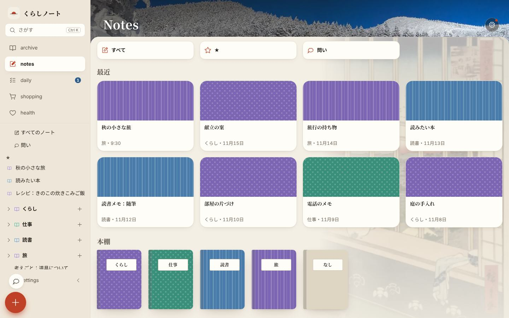
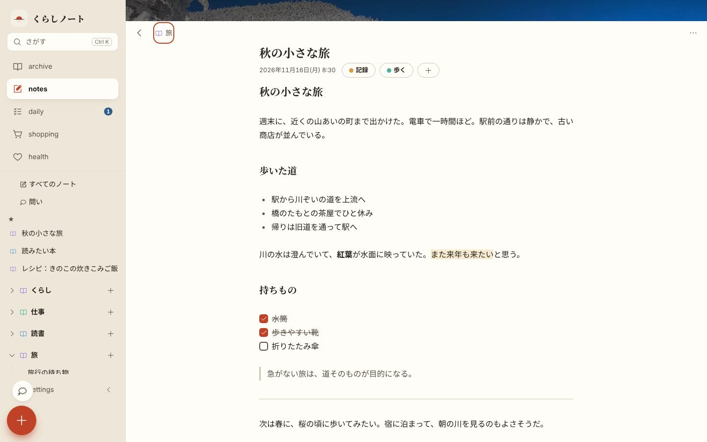
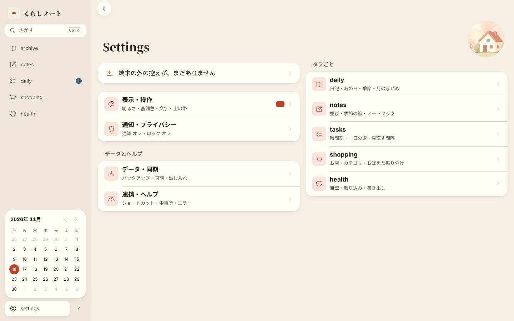
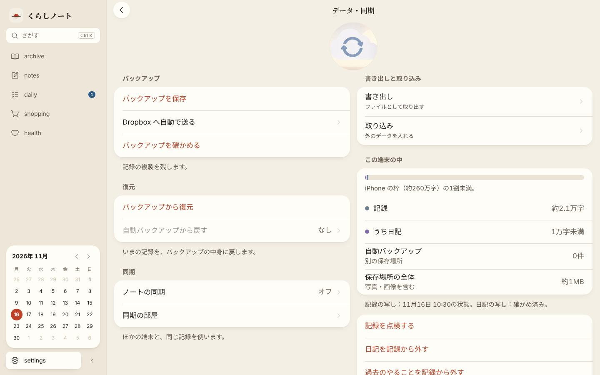

<!doctype html>
<html lang="ja">
<meta charset="utf-8">
<title>くらしノート 意匠の見本（2026-11-16）</title>
<!-- 配らない見本（pages.yml が消す。docs/dev.md「配信の守り」）。字はぜんぶ作りもの。色・角・影は css/base.css の札の値、絵は今ある写真と Phosphor。
     撮り方：shots/design/README.md の「見本」。 -->
<style>
:root{
  --c-bg:#f4efe5;--c-rail:#eee7d9;--c-surface:#fffdf8;--c-surface-2:#ebe4d6;--c-surface-3:#ded5c3;
  --c-text:#25201a;--c-text-2:#5a5146;--c-text-3:#6f6558;--c-border:#e5ddce;--c-border-2:#cfc5b2;
  --c-primary:#bf4128;--c-primary-soft:#f7e3da;--c-primary-ink:#8e2e1b;
  --c-ai:#2b5a8c;--c-ai-soft:#dfe8f2;--c-take:#2a7354;--c-yamabuki:#8a6410;--c-yamabuki-fill:#dfa32b;--c-yamabuki-soft:#f6ead0;
  --shadow-1:0 1px 2px rgba(60,40,15,.05),0 6px 18px -10px rgba(60,40,15,.18);
  --shadow-2:0 2px 6px rgba(60,40,15,.08),0 14px 32px -12px rgba(60,40,15,.26);
  --font:-apple-system,"Hiragino Sans","Noto Sans JP",sans-serif;
  --font-display:"Hiragino Mincho ProN","Yu Mincho","Noto Serif JP",serif;
  --font-num:ui-rounded,"Noto Sans JP",sans-serif;
}
*{box-sizing:border-box}
body{margin:0;background:#cfc9bc;color:var(--c-text);font:400 14px/1.5 var(--font);-webkit-font-smoothing:antialiased}
.board{display:flex;gap:26px;padding:26px 26px 30px;align-items:flex-start;width:max-content;background:#cfc9bc}
.board.v{flex-direction:column}
.fr{display:flex;flex-direction:column;gap:10px;width:min-content}
.cap{font:700 16px/1.45 var(--font);color:#2a2620;min-height:46px}
.cap b{background:#25201a;color:#fff;border-radius:6px;padding:2px 9px;font-size:14px;margin-right:8px}
.cap b.r{background:var(--c-primary)}
.cap i{font-style:normal;font-weight:400;font-size:13px;color:#4d463c;display:block;margin-top:2px}
svg.ui-ico{width:20px;height:20px;flex:none;display:block}
.ui-ico .ico-solid{display:none}
.on>.ui-ico .ico-line,.sol .ico-line,.nr .t .ico-line{display:none}
.on>.ui-ico .ico-solid,.sol .ico-solid,.nr .t .ico-solid{display:block}
.ph,.pd,.pcw{overflow:hidden;position:relative;background:var(--c-bg);box-shadow:0 0 0 1px #0003,0 24px 50px -24px #0008}
.ph{width:393px;height:852px;border-radius:36px}
.pd{width:820px;height:1180px;border-radius:26px}
.pcw{width:1440px;height:900px;border-radius:12px}
img.now{width:100%;height:100%;display:block;object-fit:cover}

/* 頭（空の写真） */
.sky{position:absolute;inset:0 0 auto 0;height:106px;background:linear-gradient(90deg,#000a,#0000 72%),url(../../img/sky/winter-day.webp) center 38%/cover;color:#fff}
.sky .y{position:absolute;left:24px;top:16px;font:700 12.5px var(--font);letter-spacing:.14em}
.sky .d{position:absolute;left:24px;top:30px;font:700 27px var(--font-display)}
.sky .d small{font:700 13px var(--font);margin-left:8px}
.sky .t{position:absolute;left:26px;top:22px;font:700 30px var(--font-display)}
.sky .bc{position:absolute;left:64px;top:28px;font:700 19px var(--font-display)} .sky .bc small{font:400 13px var(--font-display);opacity:.85;margin-right:6px}
.hb{position:absolute;top:20px;width:40px;height:40px;border-radius:50%;background:#0000006b;color:#fff;display:grid;place-items:center}
.tray{position:absolute;inset:76px 0 0 0;background:var(--c-bg);border-radius:24px 24px 0 0;overflow:hidden;padding:14px 16px 0}
.tray.hiro{background:linear-gradient(#f4efe5e8,#f4efe5d4 40%,#f4efe5b0),url(../../img/season/k46.webp) center/cover}

/* 下の帯と＋ */
.tabs{position:absolute;left:16px;right:88px;bottom:18px;height:62px;border-radius:999px;background:var(--c-surface);box-shadow:var(--shadow-2);display:flex;align-items:center;padding:0 6px;border:1px solid var(--c-border);z-index:5}
.tabs.nofab{right:16px}
.tabs span{flex:1;display:grid;justify-items:center;gap:2px;font-size:11px;color:var(--c-text-2);height:50px;align-content:center;border-radius:999px}
.tabs span.on{background:var(--c-primary-soft);color:var(--c-primary);font-weight:700}
.tabs svg.ui-ico{width:22px;height:22px}
.fab{position:absolute;right:16px;bottom:21px;width:56px;height:56px;border-radius:50%;background:var(--c-primary);color:#fff;display:grid;place-items:center;box-shadow:var(--shadow-2);z-index:5}
.fab svg.ui-ico{width:26px;height:26px}
.fabmenu{position:absolute;right:16px;bottom:88px;display:grid;gap:8px;justify-items:end;z-index:6}
.fabmenu span{display:flex;gap:10px;align-items:center;height:44px;padding:0 14px 0 16px;border-radius:999px;background:var(--c-surface);border:1px solid var(--c-border);box-shadow:var(--shadow-2);font-weight:700;font-size:14px}
.fabmenu svg{color:var(--c-primary)}

/* 部品 */
.h{font:700 19px/1.3 var(--font-display);margin:22px 4px 10px;display:flex;align-items:baseline;gap:8px}
.h small{font:400 12.5px var(--font);color:var(--c-text-3)} .h em{margin-left:auto;font:400 12.5px var(--font);color:var(--c-text-3);font-style:normal}
.card{background:var(--c-surface);border:1px solid var(--c-border);border-radius:20px;box-shadow:var(--shadow-1);overflow:hidden}
.find{height:48px;border-radius:14px;background:var(--c-surface);border:1px solid var(--c-border);display:flex;align-items:center;gap:10px;padding:0 14px;color:var(--c-text-3);font-size:16px;box-shadow:var(--shadow-1)}
.chips{display:flex;gap:8px;flex-wrap:wrap}
.chip{height:36px;padding:0 14px;border-radius:999px;background:var(--c-surface);border:1px solid var(--c-border-2);display:inline-flex;align-items:center;gap:7px;font-weight:700;font-size:13.5px;white-space:nowrap}
.chip.on{background:var(--c-primary);border-color:var(--c-primary);color:#fff}
.chip.sm{height:30px;padding:0 11px;font-size:12.5px}
.chip u{width:9px;height:9px;border-radius:50%;background:var(--nb);display:inline-block}
.chip n{font:400 12px var(--font-num);color:var(--c-text-3);font-style:normal}
.chip svg.ui-ico{width:16px;height:16px}

/* ノートの行（読める一覧） */
.nr{display:grid;grid-template-columns:1fr auto;column-gap:12px;padding:13px 16px 12px;border-top:1px solid var(--c-border)}
.nr:first-child{border-top:0}
.nr .t,.nr .x,.nr .m{grid-column:1}
.nr .t{font:700 16.5px/1.35 var(--font-display);display:flex;gap:6px;align-items:center}
.nr .t svg.ui-ico{width:14px;height:14px;color:var(--c-yamabuki-fill)}
.nr .x{font-size:13.5px;line-height:1.6;color:var(--c-text-2);display:-webkit-box;-webkit-line-clamp:2;-webkit-box-orient:vertical;overflow:hidden;margin-top:2px}
.nr .m{font-size:12px;color:var(--c-text-3);display:flex;gap:6px;align-items:center;margin-top:5px}
.nr .m u{width:8px;height:8px;border-radius:2px;background:var(--nb);display:inline-block}
.nr .pic{grid-row:1/4;grid-column:2;width:62px;height:62px;border-radius:10px;background:center/cover;align-self:center;border:1px solid var(--c-border)}
.nr.sel{background:var(--c-primary-soft);box-shadow:inset 3px 0 0 var(--c-primary)}
.mo{font:700 13.5px var(--font-display);color:var(--c-text-2);margin:16px 6px 8px;letter-spacing:.06em}

/* 背表紙の棚 */
.shelf{display:flex;gap:6px;align-items:flex-end;padding:0 8px;border-bottom:4px solid var(--c-surface-3);margin:0 2px}
.sp{width:44px;height:128px;border-radius:5px 5px 1px 1px;background:var(--nb);color:#fffdf8;position:relative;box-shadow:inset 5px 0 0 #0000001f,inset -2px 0 0 #ffffff1a}
.sp b{position:absolute;inset:12px 0 26px;writing-mode:vertical-rl;font:700 15px var(--font-display);letter-spacing:.1em;display:flex;align-items:center}
.sp i{position:absolute;bottom:7px;left:0;right:0;text-align:center;font:400 11px var(--font-num);font-style:normal;opacity:.85}
.sp.ink{color:var(--c-text)}
/* 布の表紙 */
.bks{display:grid;grid-template-columns:repeat(3,1fr);gap:14px 12px}
.bk{aspect-ratio:3/4;border-radius:4px 10px 10px 4px;background:var(--nb);position:relative;box-shadow:inset 9px 0 0 #00000026,inset 10px 0 0 #ffffff1f,var(--shadow-2)}
.bk::after{content:"";position:absolute;inset:0;opacity:.09;background:repeating-linear-gradient(90deg,#fff 0 1px,#0000 0 4px),repeating-linear-gradient(0deg,#fff 0 1px,#0000 0 4px)}
.bk span{position:absolute;left:24%;right:14%;top:14%;padding:7px 4px;background:var(--c-surface);border-radius:2px;font:700 12.5px var(--font-display);text-align:center;box-shadow:0 0 0 1px var(--c-border-2);z-index:1}

/* 読む面 */
.sheet{position:absolute;inset:14px 0 0 0;background:var(--c-surface);border-radius:28px 28px 0 0;box-shadow:0 -8px 30px -12px #0005;overflow:hidden}
.grab{width:40px;height:4px;border-radius:2px;background:var(--c-border-2);margin:9px auto 0}
.bar{display:flex;align-items:center;gap:6px;height:48px;padding:0 10px;color:var(--c-text-2)}
.bar .ib{width:40px;height:40px;display:grid;place-items:center}
.bar .nb{display:flex;gap:7px;align-items:center;font-size:13.5px}
.bar .nb u{width:9px;height:9px;border-radius:2px;background:var(--nb);display:inline-block}
.rd{padding:0 22px}
.rd .cover{height:176px;border-radius:14px;background:center/cover;margin:4px 0 14px}
.rd h1{font:700 26px/1.35 var(--font-display);margin:0 0 6px}
.rd .meta{font-size:12.5px;color:var(--c-text-3);display:flex;gap:8px;align-items:center;flex-wrap:wrap}
.rd p{font-size:16px;line-height:1.85;margin:.9em 0}
.rd h2{font:700 19px/1.4 var(--font-display);margin:1.6em 0 .45em}
.rd ul{margin:.5em 0;padding-left:1.3em;font-size:16px;line-height:1.85}
.rd mark{background:var(--c-yamabuki-soft);padding:0 2px;border-radius:3px;color:inherit}
.rd blockquote{margin:1.1em 0;padding:1px 0 1px 14px;border-left:3px solid var(--c-border-2);color:var(--c-text-2);font-size:16px;line-height:1.85}
.ck{display:flex;gap:10px;align-items:center;font-size:16px;line-height:2}
.ck u{width:20px;height:20px;border-radius:5px;border:2px solid var(--c-text-2);display:grid;place-items:center}
.ck.on u{background:var(--c-primary);border-color:var(--c-primary);color:#fff}
.ck.on u svg.ui-ico{width:14px;height:14px}
.ck.on span{color:var(--c-text-3);text-decoration:line-through}

/* 設定の行 */
.sr{display:flex;align-items:center;gap:12px;min-height:60px;padding:8px 14px 8px 12px;border-top:1px solid var(--c-border)}
.sr:first-child{border-top:0}
.sr .ic{width:36px;height:36px;border-radius:10px;background:var(--c-primary-soft);color:var(--c-primary);display:grid;place-items:center;flex:none}
.sr .ic.k{background:var(--c-surface-2);color:var(--c-text)}
.sr b{font-size:16px;display:block;line-height:1.3} .sr small{font-size:12.5px;color:var(--c-text-3);display:block;line-height:1.35}
.sr .v{margin-left:auto;font-size:13.5px;color:var(--c-text-2);display:flex;gap:6px;align-items:center;white-space:nowrap}
.sr .v svg.ui-ico{width:15px;height:15px;color:var(--c-border-2)}
.sr.sel{background:var(--c-primary-soft)}
.gl{font:700 12.5px var(--font);color:var(--c-text-3);margin:20px 8px 8px;letter-spacing:.04em}
.btn{height:52px;border-radius:16px;background:var(--c-primary);color:#fff;font-weight:700;font-size:16px;display:flex;align-items:center;justify-content:center;gap:8px}
.btn.sub{background:var(--c-surface-2);color:var(--c-text);height:40px;border-radius:12px;font-size:14px}
.sw{width:50px;height:30px;border-radius:999px;background:var(--c-surface-3);position:relative;box-shadow:inset 0 0 0 1.5px #a89c86;flex:none;margin-left:auto}
.sw::after{content:"";position:absolute;left:3px;top:3px;width:24px;height:24px;border-radius:50%;background:#fff;box-shadow:0 1px 3px #0005}
.sw.on{background:var(--c-primary);box-shadow:none}.sw.on::after{left:23px}

/* パソコン */
.rail{position:absolute;inset:0 auto 0 0;width:256px;background:var(--c-rail);border-right:1px solid var(--c-border);padding:20px 14px;display:flex;flex-direction:column;gap:2px}
.rail .logo{display:flex;gap:10px;align-items:center;font:700 19px var(--font-display);margin:0 6px 12px}
.rail .logo u{width:32px;height:32px;border-radius:9px;background:var(--c-surface);display:grid;place-items:center;border:1px solid var(--c-border)}
.rail .logo u::after{content:"";width:16px;height:8px;border-radius:8px 8px 0 0;background:var(--c-primary)}
.rail .q{height:36px;border-radius:10px;background:var(--c-surface);border:1px solid var(--c-border-2);display:flex;align-items:center;gap:8px;padding:0 10px;color:var(--c-text-3);margin-bottom:10px;font-size:14px}
.rail .q kbd{margin-left:auto;font:400 11px var(--font);border:1px solid var(--c-border-2);border-radius:5px;padding:1px 5px}
.rail .tb{height:42px;border-radius:10px;display:flex;align-items:center;gap:12px;padding:0 12px;color:var(--c-text-2);font-size:15px}
.rail .tb.on{background:var(--c-surface);color:var(--c-text);font-weight:700;box-shadow:var(--shadow-1)} .rail .tb.on svg{color:var(--c-primary)}
.rail hr{border:0;border-top:1px solid var(--c-border-2);margin:10px -14px;opacity:.6}
.rail .tr{height:32px;display:flex;align-items:center;gap:9px;padding:0 10px;font-size:13.5px;color:var(--c-text-2);border-radius:8px}
.rail .tr u{width:9px;height:9px;border-radius:2px;background:var(--nb);display:inline-block}
.rail .tr.on{background:var(--c-surface-2);color:var(--c-text);font-weight:700}
.rail .tr n{margin-left:auto;font:400 11.5px var(--font-num);color:var(--c-text-3)}
.rail .new{margin-top:auto;height:40px;border-radius:12px;background:var(--c-primary);color:#fff;font-weight:700;display:flex;align-items:center;justify-content:center;gap:8px;font-size:14px}
.pane{position:absolute;top:0;bottom:0;background:var(--c-bg)}
.kbd{font:400 11px var(--font);border:1px solid var(--c-border-2);border-radius:5px;padding:1px 5px;color:var(--c-text-3)}
.ol{position:absolute;right:28px;top:120px;width:170px;font-size:13px;color:var(--c-text-3);display:grid;gap:9px;border-left:1px solid var(--c-border);padding-left:14px}
.ol b{color:var(--c-text);position:relative} .ol b::before{content:"";position:absolute;left:-15px;top:2px;bottom:2px;width:2px;background:var(--c-primary)}
.ol small{font:700 11px var(--font);letter-spacing:.08em}

/* 机（ホーム） */
.door{height:286px;border-radius:20px;background:linear-gradient(#0000 45%,#000a),linear-gradient(250deg,#0009,#0000 42%),url(../../img/season-photo/k46.webp) center/cover;position:relative;color:#fff;box-shadow:var(--shadow-1)}
.door b{position:absolute;right:24px;top:22px;writing-mode:vertical-rl;font:700 30px var(--font-display);letter-spacing:.12em}
.door small{position:absolute;right:66px;top:26px;writing-mode:vertical-rl;font:400 11px var(--font);letter-spacing:.2em;opacity:.9}
.door i{position:absolute;left:20px;bottom:16px;font:700 20px var(--font-display);font-style:normal} .door i small{position:static;writing-mode:horizontal-tb;display:block;font:700 11px var(--font);letter-spacing:.1em}
.desk .ln{display:flex;align-items:center;gap:12px;height:58px;padding:0 8px 0 16px;color:var(--c-text-3);font:400 16px var(--font-display)}
.desk .ln svg{color:var(--c-primary)} .desk .ln .ib{margin-left:auto;width:44px;height:44px;display:grid;place-items:center;color:var(--c-text-2)} .desk .ln .ib svg{color:inherit}
.desk .ask{border-top:1px solid var(--c-border);padding:13px 16px 14px}
.desk .ask small{font:700 11.5px var(--font);color:var(--c-text-3);letter-spacing:.08em}
.desk .ask p{font:700 17px/1.6 var(--font-display);margin:4px 0 10px}
.ysp{width:36px;height:86px;border-radius:4px 4px 1px 1px;background:var(--nb);color:#fffdf8;position:relative;box-shadow:inset 4px 0 0 #0000001f}
.ysp b{position:absolute;inset:0;display:grid;place-items:center;writing-mode:vertical-rl;font:700 14px var(--font-num);letter-spacing:.06em}
.ima{padding:4px 16px 12px}
.ima .yr{display:flex;gap:10px;align-items:baseline;margin:14px 0 2px;font:700 13px var(--font-num)} .ima .yr u{width:10px;height:14px;border-radius:2px;background:var(--nb);display:inline-block;transform:translateY(2px)} .ima .yr small{font:400 12px var(--font);color:var(--c-text-3)}
.ima p{font:400 15.5px/1.8 var(--font-display);margin:0 0 2px;padding-left:20px}
.ima .did{font-size:12.5px;color:var(--c-text-3);padding-left:20px}

/* 札の見本 */
.sys{width:1330px;background:var(--c-bg);border-radius:18px;padding:30px 34px;box-shadow:0 0 0 1px #0003}
.sys h3{font:700 19px var(--font-display);margin:26px 0 12px} .sys h3:first-child{margin-top:0} .sys h3 small{font:400 13px var(--font);color:var(--c-text-3);margin-left:10px}
.sws{display:flex;gap:10px;flex-wrap:wrap}
.sw1{width:100px} .sw1 u{display:block;height:54px;border-radius:12px;border:1px solid #0001;background:var(--v)} .sw1 small{display:block;font-size:11.5px;color:var(--c-text-2);margin-top:4px;line-height:1.35}
.arrow{align-self:center;font:700 18px var(--font);color:var(--c-text-3);padding:0 6px}
.ts{display:grid;grid-template-columns:1fr 1fr;gap:26px}
.ts .box{background:var(--c-surface);border:1px solid var(--c-border);border-radius:16px;padding:16px 20px}
.ts .l{display:flex;align-items:baseline;gap:14px;border-top:1px solid var(--c-border);padding:5px 0} .ts .l:first-of-type{border-top:0} .ts .l n{width:54px;font:400 12px var(--font-num);color:var(--c-text-3);font-style:normal} .ts .l em{margin-left:auto;font:400 12px var(--font);color:var(--c-text-3);font-style:normal}
</style>
<body>
<div id="root"></div>
<script src="../../js/icons.js"></script>
<script src="../../js/icons-phosphor.js"></script>
<script>
const ic = (n) => KN.icons.svg(n);
const NB = { "くらし": "#55704a", "仕事": "#2f5d86", "読書": "#5f4b8b", "旅": "#a2582a", "thinking": "#8f3b3b", "庭": "#3f7565", "": "#cdbfa3" };
const P = (n) => `../../img/season-photo/k${n}.webp`;
const NOTES = [
  { t: "秋の小さな旅", x: "週末に、近くの山あいの町まで出かけた。電車で一時間ほど。駅前の通りは静かで、古い商店が並んでいる。", nb: "旅", d: "今日 8:30", fav: 1, pic: P(47) },
  { t: "献立の案", x: "月：焼き魚と味噌汁　火：鍋　水：カレー。足りないものは買うものへ。", nb: "くらし", d: "昨日" },
  { t: "読書メモ：随筆", x: "静かな文章だった。季節の移りを、台所の窓から書いている。毎日は似ているが、同じ日は無い。", nb: "読書", d: "11月11日", pic: P(50) },
  { t: "考えごと：道具について", x: "長く使う道具は、手入れのしやすさで選ぶ。新しさより、直せること。", nb: "thinking", d: "11月9日", fav: 1 },
  { t: "庭の手入れ", x: "落ち葉を集める。鉢を軒下へ。球根を植える。", nb: "くらし", d: "11月8日", pic: P(52) },
  { t: "旅行の持ち物", x: "着替え、充電器、切符。", nb: "旅", d: "11月7日" },
  { t: "打ち合わせの控え", x: "資料は来週まで。次回は月末。", nb: "仕事", d: "11月5日" },
  { t: "きのこの炊きこみご飯", x: "米 二合、きのこ 三種、油揚げ 一枚。きのこをほぐし、調味料と一緒に炊く。", nb: "くらし", d: "10月30日", fav: 1, pic: P(49) },
  { t: "読みたい本", x: "図書館で予約するもの。随筆を二冊、料理の本を一冊。", nb: "読書", d: "10月28日" },
];
const row = (n, o = {}) => `<div class="nr ${o.sel ? "sel" : ""}" style="--nb:${NB[n.nb]}"><div class="t">${n.t}${n.fav ? ic("star") : ""}</div><div class="x" ${o.one ? 'style="-webkit-line-clamp:1"' : ""}>${n.x}</div><div class="m"><u></u>${n.nb || "なし"}・${n.d}</div>${n.pic && !o.nopic ? `<div class="pic" style="background-image:url(${n.pic})"></div>` : ""}</div>`;
const tabs = (on, fab = true) => `<div class="tabs ${fab ? "" : "nofab"}">${[["book", "archive"], ["notes", "notes"], ["checklist", "daily"], ["cart", "shopping"], ["heart", "health"]].map(([i, l]) => `<span class="${l === on ? "on" : ""}">${ic(i)}${l}</span>`).join("")}</div>${fab ? `<div class="fab">${ic("plus")}</div>` : ""}`;
const sky = (inner) => `<div class="sky">${inner}<div class="hb" style="right:68px">${ic("search")}</div><div class="hb" style="right:16px">${ic("gear")}</div></div>`;
const skyDate = `<div class="y">2026 ・ 立冬</div><div class="d">11月16日<small>月曜日</small></div>`;
const cap = (n, t, s = "", r = "") => `<div class="cap"><b class="${r}">${n}</b>${t}<i>${s}</i></div>`;
const now = (f, cls) => `<div class="${cls}"></div>`;
const shelf = (list) => `<div class="shelf">${list.map(([n, c, h]) => `<div class="sp ${n === "なし" ? "ink" : ""}" style="--nb:${NB[n === "なし" ? "" : n]};height:${h}px"><b>${n}</b><i>${c}</i></div>`).join("")}</div>`;
const BOOKS = [["くらし", 6, 128], ["仕事", 3, 136], ["読書", 4, 124], ["旅", 2, 132], ["thinking", 5, 128], ["なし", 1, 120]];
const tags = (sm) => `<div class="chips">${[["家", "#55704a"], ["季節", "#a2582a"], ["記録", "#2f5d86"], ["考え", "#8f3b3b"], ["歩く", "#3f7565"], ["本", "#5f4b8b"], ["料理", "#a8626f"]].map(([t, c]) => `<span class="chip ${sm ? "sm" : ""}" style="--nb:${c}"><u></u>${t}</span>`).join("")}</div>`;
const gates = `<div class="chips" style="margin-top:12px"><span class="chip">${ic("notes")}すべて<n>24</n></span><span class="chip">${ic("star")}★<n>3</n></span><span class="chip">${ic("thought")}問い</span></div>`;

/* ---- 1 ノートのホーム（電話） ---- */
const b1 = `<section class="board" id="b1">
<div class="fr">${cap("いま", "notes のホーム", "広重の上に柄の表紙・表紙に中身の手がかりが無い")}${now("phone-notes", "ph")}</div>
<div class="fr">${cap("案A", "蔵書——背表紙の棚と、読める「最近」", "勧め。棚は archive の年の背表紙と同じ部品", "r")}
<div class="ph">${sky(`<div class="t">Notes</div>`)}<div class="tray">
  <div class="find">${ic("search")}ノートをさがす</div>${gates}
  <div class="h">最近</div><div class="card">${NOTES.slice(0, 3).map((n) => row(n, { one: 1 })).join("")}</div>
  <div class="h">本棚</div>${shelf(BOOKS)}
  <div class="h">タグ</div>${tags(1)}
</div>${tabs("notes")}</div></div>
<div class="fr">${cap("案B", "布の表紙——表紙は残し、色と地を整える", "広重は敷いたまま（11月14日の決めを残す形）")}
<div class="ph">${sky(`<div class="t">Notes</div>`)}<div class="tray hiro">
  <div class="find">${ic("search")}ノートをさがす</div>${gates}
  <div class="h">最近</div><div class="card">${NOTES.slice(0, 2).map((n) => row(n, { one: 1 })).join("")}</div>
  <div class="h">本棚</div><div class="bks">${BOOKS.slice(0, 6).map(([n]) => `<div class="bk" style="--nb:${NB[n === "なし" ? "" : n]}"><span>${n}</span></div>`).join("")}</div>
</div>${tabs("notes")}</div></div>
<div class="fr">${cap("案A", "＋は一つ——押すと三つの口", "いまは＋の上に名札の無い丸（思考）", "r")}
<div class="ph">${sky(`<div class="t">Notes</div>`)}<div class="tray" style="filter:brightness(.82)">
  <div class="find">${ic("search")}ノートをさがす</div>${gates}
  <div class="h">最近</div><div class="card">${NOTES.slice(0, 3).map((n) => row(n, { one: 1 })).join("")}</div>
  <div class="h">本棚</div>${shelf(BOOKS)}
</div><div class="fabmenu"><span>問いをつくる${ic("thought")}</span><span>考える（thinking）${ic("sparkles")}</span><span>ノート${ic("edit")}</span></div>${tabs("notes")}</div></div>
</section>`;

/* ---- 2 一覧と読む面（電話） ---- */
const body = (cover) => `<div class="rd">${cover ? `<div class="cover" style="background-image:url(${P(47)})"></div>` : ""}
  <h1>秋の小さな旅</h1><div class="meta">2026年11月16日(月) 8:30<span class="chip sm" style="--nb:#2f5d86"><u></u>記録</span><span class="chip sm" style="--nb:#3f7565"><u></u>歩く</span><span class="chip sm" style="padding:0 9px">${ic("plus")}</span></div>
  <p>週末に、近くの山あいの町まで出かけた。電車で一時間ほど。駅前の通りは静かで、古い商店が並んでいる。</p>
  <h2>歩いた道</h2><ul><li>駅から川ぞいの道を上流へ</li><li>橋のたもとの茶屋でひと休み</li><li>帰りは旧道を通って駅へ</li></ul>
  <p>川の水は澄んでいて、<b>紅葉</b>が水面に映っていた。<mark>また来年も来たい</mark>と思う。</p>
  <h2>持ちもの</h2><div class="ck on"><u>${ic("check")}</u><span>水筒</span></div><div class="ck on"><u>${ic("check")}</u><span>歩きやすい靴</span></div><div class="ck"><u></u><span>折りたたみ傘</span></div>
  <blockquote>急がない旅は、道そのものが目的になる。</blockquote>
  <p>次は春に、桜の頃に歩いてみたい。宿に泊まって、朝の川を見るのもよさそうだ。</p></div>`;
const b2 = `<section class="board" id="b2">
<div class="fr">${cap("いま", "すべてのノート", "一行 96〜118px（タグが折り返すと背が変わる）・柄の四角は冊の名の繰り返し・☆がどの行にも")}${now("phone-notes-all", "ph")}</div>
<div class="fr">${cap("案", "読める一覧", "どの行も同じ背（約94px）・月の見出し・写真のあるノートだけ口絵・★は付いたものだけ", "r")}
<div class="ph">${sky(`<div class="hb" style="left:14px">${ic("chevron-left")}</div><div class="bc"><small>Notes ›</small>すべてのノート</div>`)}<div class="tray">
  <div class="chips" style="flex-wrap:nowrap"><span class="chip on">すべて</span><span class="chip">${ic("star")}</span><span class="chip">ノートブック${ic("chevron-down")}</span><span class="chip">タグ${ic("chevron-down")}</span></div>
  <div class="mo">2026年 11月</div><div class="card">${NOTES.slice(0, 7).map((n) => row(n, { one: 1 })).join("")}</div>
</div>${tabs("notes")}</div></div>
<div class="fr">${cap("いま", "ノートを読む", "紙の四辺に 8px ずつ下の画面が覗く・空行（28px）と見出しの余白が重なる")}${now("phone-notes-open", "ph")}</div>
<div class="fr">${cap("案", "読む面", "紙は端まで・写真があれば口絵・空行と見出しの余白を二重に取らない", "r")}
<div class="ph" style="background:#3a352e"><div class="sheet"><div class="grab"></div>
  <div class="bar"><span class="ib">${ic("chevron-left")}</span><span class="nb" style="--nb:${NB["旅"]}"><u></u>旅</span><span class="ib sol" style="margin-left:auto;color:var(--c-yamabuki-fill)">${ic("star")}</span><span class="ib">${ic("more")}</span></div>
  ${body(1)}</div></div></div>
</section>`;

/* ---- 3 パソコン：ノートの三面 ---- */
const rail = (on, tree) => `<div class="rail"><div class="logo"><u></u>くらしノート</div><div class="q">${ic("search")}さがす<kbd>Ctrl K</kbd></div>
  ${[["book", "archive"], ["notes", "notes"], ["checklist", "daily"], ["cart", "shopping"], ["heart", "health"]].map(([i, l]) => `<div class="tb ${l === on ? "on" : ""}">${ic(i)}${l}</div>`).join("")}
  ${tree || ""}<div class="tb" style="margin-top:${tree ? "8px" : "auto"}">${ic("gear")}settings</div></div>`;
const tree = `<hr><div class="tr on">${ic("notes")}すべてのノート<n>24</n></div><div class="tr">${ic("star")}★<n>3</n></div><div class="tr">${ic("thought")}問い</div><hr>
  ${BOOKS.map(([n, c]) => `<div class="tr" style="--nb:${NB[n === "なし" ? "" : n]}"><u></u>${n}<n>${c}</n></div>`).join("")}
  <div class="new">${ic("plus")}新しいノート<span class="kbd" style="border-color:#fff6;color:#fff">N</span></div>`;
const b3 = `<section class="board v" id="b3">
<div class="fr">${cap("いま", "パソコンの notes（1440×900）", "ホームは左の木と同じ中身を大きな柄で繰り返す。開くと頭に写真の細い帯が残る")}
<div style="display:flex;gap:26px"><div class="pcw" style="width:707px;height:442px">${``}</div><div class="pcw" style="width:707px;height:442px"></div></div></div>
<div class="fr">${cap("案", "三面——木｜一覧｜読む面。右の余白に見出し", "パソコンと iPad 横。ホームを挟まず、いちばん新しい一冊が開いている", "r")}
<div class="pcw">${rail("notes", tree)}
  <div class="pane" style="left:256px;width:372px;border-right:1px solid var(--c-border);padding:22px 14px 0">
    <div class="h" style="margin-top:0">すべてのノート<em>直した日 ▾</em></div>
    <div class="mo" style="margin-top:6px">2026年 11月</div><div class="card">${NOTES.slice(0, 7).map((n, i) => row(n, { sel: i === 0, one: 1 })).join("")}</div>
  </div>
  <div class="pane" style="left:628px;right:0;background:var(--c-surface)">
    <div class="bar" style="padding:0 18px;height:56px"><span class="nb" style="--nb:${NB["旅"]}"><u></u>旅</span><span class="ib sol" style="margin-left:auto;color:var(--c-yamabuki-fill)">${ic("star")}</span><span class="ib">${ic("more")}</span></div>
    <div style="width:560px;margin:0 0 0 44px">${body(1).replace('class="rd"', 'class="rd" style="padding:0"')}</div>
    <div class="ol"><small>見出し</small><b>歩いた道</b><span>持ちもの</span></div>
  </div>
</div></div>
</section>`;

/* ---- 4 iPad 縦：読む面 ---- */
const b4 = `<section class="board" id="b4">
<div class="fr">${cap("いま", "iPad 縦でノートを開く", "紙は 560×760 の小窓。縦 1180 の三分の一が使われない")}${now("pad-notes-open", "pd")}</div>
<div class="fr">${cap("案", "頁いっぱいの紙", "幅は読む幅（680）のまま、背を画面いっぱいに", "r")}
<div class="pd" style="background:#3a352e"><div class="sheet" style="inset:36px 40px 0 40px;border-radius:28px 28px 0 0"><div class="grab"></div>
  <div class="bar" style="padding:0 18px"><span class="ib">${ic("chevron-left")}</span><span class="nb" style="--nb:${NB["旅"]}"><u></u>旅</span><span class="ib sol" style="margin-left:auto;color:var(--c-yamabuki-fill)">${ic("star")}</span><span class="ib">${ic("more")}</span></div>
  <div style="width:620px;margin:0 auto;font-size:17px">${body(1).replace('class="rd"', 'class="rd" style="padding:0"').replace("height:176px", "height:300px")}</div></div></div></div>
</section>`;

/* ---- 5 ホーム（archive）と書く・考える口 ---- */
const YS = [["2026", "#9b3b2b"], ["2025", "#57467a"], ["2024", "#6b4a2b"], ["2023", "#2f5f4a"]];
const b5 = `<section class="board" id="b5">
<div class="fr">${cap("いま", "archive（ホーム）", "目が最初に行くのは扉ではなく朱の大きな札")}${now("phone-archive", "ph")}</div>
<div class="fr">${cap("案", "机を紙の色に——書く・今日の問い・考える", "朱は筆の絵だけ。書く欄は頁の一行と同じ姿", "r")}
<div class="ph">${sky(skyDate)}<div class="tray" style="padding-top:16px">
  <div class="door"><small>ちはじめてこおる</small><b>地始凍</b><i><small>立冬　次候</small>11/12–11/16</i></div>
  <div class="card desk" style="margin-top:14px"><div class="ln">${ic("edit")}いまのことを一行から<span class="ib">${ic("copy")}</span></div>
    <div class="ask"><small>今日の問い</small><p>長く使いたい道具を、何で選んでいるだろう。</p><div class="chips"><span class="chip sm" style="background:var(--c-surface-2);border-color:transparent">${ic("thought")}考える</span><span class="chip sm" style="border-color:transparent;color:var(--c-text-2);font-weight:400">${ic("shuffle")}別の問い</span></div></div></div>
  <div style="display:flex;align-items:flex-end;gap:6px;margin:18px 2px 0;padding:0 8px;border-bottom:4px solid var(--c-surface-3)">${YS.map(([y, c]) => `<div class="ysp" style="--nb:${c}"><b>${y}</b></div>`).join("")}<span class="chip sm" style="margin:0 0 10px auto;background:var(--c-surface-2);border-color:transparent">${ic("shuffle")}どこかの一日</span></div>
  <div class="card" style="margin-top:14px"><div class="h" style="margin:14px 16px 0">いまごろ<small>地始凍</small></div><div class="ima">
    <div class="yr" style="--nb:${YS[0][1]}"><u></u>2026<small>11月16日 月</small></div><p>朝は冷えたので、厚手の上着を出した。湯を沸かして、ゆっくり茶を飲む。</p>
    <div class="yr" style="--nb:${YS[1][1]}"><u></u>2025<small>11月16日 日</small></div><p>去年のこの日は、朝から雨だった。</p></div></div>
</div>${tabs("archive", false)}</div></div>
<div class="fr">${cap("案", "問いの無い日・鍵のあいだ", "机は一行と小さな「考える」だけ。出し分けは今の決めのまま")}
<div class="ph">${sky(skyDate)}<div class="tray" style="padding-top:16px">
  <div class="door"><small>ちはじめてこおる</small><b>地始凍</b><i><small>立冬　次候</small>11/12–11/16</i></div>
  <div class="card desk" style="margin-top:14px"><div class="ln">${ic("edit")}いまのことを一行から<span class="ib">${ic("thought")}</span><span class="ib" style="margin-left:0">${ic("copy")}</span></div></div>
  <div style="display:flex;align-items:flex-end;gap:6px;margin:18px 2px 0;padding:0 8px;border-bottom:4px solid var(--c-surface-3)">${YS.map(([y, c]) => `<div class="ysp" style="--nb:${c}"><b>${y}</b></div>`).join("")}<span class="chip sm" style="margin:0 0 10px auto;background:var(--c-surface-2);border-color:transparent">${ic("shuffle")}どこかの一日</span></div>
  <div class="card" style="margin-top:14px"><div class="h" style="margin:14px 16px 0">いまごろ<small>地始凍</small></div><div class="ima">
    <div class="yr" style="--nb:${YS[0][1]}"><u></u>2026<small>11月16日 月</small></div><p>朝は冷えたので、厚手の上着を出した。湯を沸かして、ゆっくり茶を飲む。</p><div class="did">した　洗濯物を干す・病院の予約</div>
    <div class="yr" style="--nb:${YS[1][1]}"><u></u>2025<small>11月16日 日</small></div><p>去年のこの日は、朝から雨だった。窓ぎわで本を読んで過ごした。</p>
    <div class="yr" style="--nb:${YS[2][1]}"><u></u>2024<small>11月16日 土</small></div><p>二年前のこの日は、市場へ出かけた。柿と栗を買った。</p></div></div>
</div>${tabs("archive", false)}</div></div>
</section>`;

/* ---- 6 設定（電話） ---- */
const sr = (i, t, s, v = "", o = {}) => `<div class="sr ${o.sel ? "sel" : ""}">${i ? `<span class="ic ${o.k ? "k" : ""}">${ic(i)}</span>` : ""}<div><b style="${o.plain ? "font-weight:400" : ""}">${t}</b>${s ? `<small>${s}</small>` : ""}</div><span class="v">${v}${o.sw != null ? "" : ic("chevron")}</span>${o.sw != null ? `<span class="sw ${o.sw ? "on" : ""}"></span>` : ""}</div>`;
const setRoot = (sel) => `<div class="card">${sr("download", "端末の外の控え", "", "まだありません", { k: 1 })}</div>
  <div class="gl">見た目と操作</div><div class="card">${sr("palette", "表示・操作", "明るさ・装い・文字", `<u style="width:22px;height:14px;border-radius:5px;background:var(--c-primary);display:inline-block"></u>`)}${sr("bell", "通知・ロック", "", "オフ")}</div>
  <div class="gl">席</div><div class="card">${sr("book", "archive", "日記・いまごろ・季節")}${sr("notes", "notes", "並び・ノートブック・タグ")}${sr("checklist", "daily", "時間割・一日の道・見直す間隔")}${sr("cart", "shopping", "お店・カテゴリ")}${sr("heart", "health", "目標・取り込み")}</div>
  <div class="gl">記録を守る</div><div class="card">${sr("download", "控え", "保存・Dropbox・戻す", "", { sel: sel === "bk" })}${sr("repeat", "同期", "部屋・ノートの同期")}${sr("upload", "出し入れ", "書き出し・取り込み")}${sr("rows", "この端末", "容量・点検")}</div>
  <div class="gl"></div><div class="card">${sr("link", "連携・ヘルプ", "ショートカット・中継所・エラー")}</div>`;
const setBk = `<div class="card" style="padding:14px 16px 16px"><div style="display:flex;justify-content:space-between;font-size:14px;color:var(--c-text-2);line-height:2"><span>この端末の中</span><span>今日 10:30</span></div><div style="display:flex;justify-content:space-between;font-size:14px;color:var(--c-text-2);line-height:2;margin-bottom:10px"><span>Dropbox</span><span>まだ</span></div><div class="btn">${ic("download")}いま控えを取る</div></div>
  <div class="gl">自動</div><div class="card">${sr("", "Dropbox へ自動で送る", "", "オフ", { plain: 1 })}${sr("", "控えを確かめる", "", "", { plain: 1 })}</div>
  <div class="gl">戻す——いまの記録を置きかえる</div><div class="card" style="border-color:var(--c-border-2)">${sr("undo", "控えから戻す", "", "", { k: 1, plain: 1 })}${sr("undo", "自動の控えから戻す", "", "なし", { k: 1, plain: 1 })}</div>`;
const b6 = `<section class="board" id="b6">
<div class="fr">${cap("いま", "設定の根っこ", "席の名が帯と違う（daily＝日記の設定・tasks＝時間割の設定）")}${now("phone-settings", "ph")}</div>
<div class="fr">${cap("案", "根っこ——帯と同じ名", "「データ・同期」（2.1画面ぶんの一枚）は 控え｜同期｜出し入れ｜この端末 に分ける", "r")}
<div class="ph"><div style="position:absolute;inset:0;padding:36px 16px 0;overflow:hidden"><div class="hb" style="left:14px;top:26px;background:var(--c-surface);color:var(--c-text);box-shadow:var(--shadow-1)">${ic("chevron-left")}</div>
  <div style="display:flex;align-items:center;justify-content:space-between;margin:44px 6px 14px"><div style="font:700 32px var(--font-display)">Settings</div><div style="width:72px;height:72px;border-radius:50%;background:url(../../img/set/root.webp) center/cover"></div></div>
  ${setRoot()}</div>${tabs("", false)}</div></div>
<div class="fr">${cap("いま", "データ・同期", "六つの段が一枚に（2.1画面ぶん）。保存も復元も「記録から外す」も同じ朱の字")}${now("phone-set-data", "ph")}</div>
<div class="fr">${cap("案", "控え——状態・主のボタン・置きかえは下に分ける", "朱は「いま控えを取る」だけ。戻す操作は墨の字と絵、いちばん下の別の束", "r")}
<div class="ph"><div style="position:absolute;inset:0;padding:36px 16px 0"><div class="hb" style="left:14px;top:26px;background:var(--c-surface);color:var(--c-text);box-shadow:var(--shadow-1)">${ic("chevron-left")}</div>
  <div style="text-align:center;font:700 19px var(--font-display);margin:0 0 34px">控え</div>${setBk}</div>${tabs("", false)}</div></div>
</section>`;

/* ---- 7 設定（パソコン・iPad 横）：二面 ---- */
const b7 = `<section class="board v" id="b7">
<div class="fr">${cap("いま", "パソコンの設定（1440×900）", "根っこは二段の札。入ると根っこが消え、どこに居るかが見えなくなる")}
<div style="display:flex;gap:26px"><div class="pcw" style="width:707px;height:442px"></div><div class="pcw" style="width:707px;height:442px"></div></div></div>
<div class="fr">${cap("案", "二面——左に根っこ、右に選んだ一枚", "iPad 横・パソコン。電話は今の一枚ずつのまま", "r")}
<div class="pcw">${rail("", "")}
  <div class="pane" style="left:256px;width:400px;border-right:1px solid var(--c-border);padding:26px 16px 0;overflow:hidden">
    <div style="display:flex;align-items:center;justify-content:space-between;margin:0 6px 14px"><div style="font:700 28px var(--font-display)">Settings</div><div style="width:56px;height:56px;border-radius:50%;background:url(../../img/set/root.webp) center/cover"></div></div>${setRoot("bk")}</div>
  <div class="pane" style="left:656px;right:0;padding:30px 0 0"><div style="width:520px;margin:0 auto"><div style="font:700 22px var(--font-display);margin:0 4px 18px">控え</div>${setBk}</div></div>
</div></div>
</section>`;

/* ---- 8 札の見本（色・字・部品） ---- */
const sw = (v, n) => `<div class="sw1"><u style="--v:${v}"></u><small>${n}<br>${v}</small></div>`;
const b8 = `<section class="board" id="b8"><div class="sys">
  <h3>土台の色<small>変えない。紙・墨・朱と役目の色（css/base.css の札）</small></h3>
  <div class="sws">${[["#f4efe5", "地 生成り"], ["#fffdf8", "札"], ["#ebe4d6", "沈んだ面"], ["#25201a", "墨"], ["#5a5146", "墨2"], ["#6f6558", "墨3"], ["#bf4128", "朱"], ["#2b5a8c", "藍 予定"], ["#2a7354", "若竹 やること"], ["#dfa32b", "山吹"], ["#5d4c98", "藤 睡眠"]].map(([v, n]) => sw(v, n)).join("")}</div>
  <h3>冊とタグの色<small>いま（明るい八色）→ 案（年の背表紙と同じ深さの八色。記録は変えず、描くときに読み替える）</small></h3>
  <div class="sws">${["#5ea55a", "#d4695f", "#d79a4a", "#5b9bd5", "#4fb3c4", "#9b7ede", "#48b39a", "#e07fa8"].map((v) => `<div class="sw1" style="width:62px"><u style="--v:${v};height:40px"></u></div>`).join("")}<span class="arrow">→</span>${[["#55704a", "松葉"], ["#8f3b3b", "臙脂"], ["#a2582a", "柿"], ["#2f5d86", "藍"], ["#387682", "浅葱"], ["#5f4b8b", "江戸紫"], ["#3f7565", "千歳緑"], ["#a8626f", "薄紅"]].map(([v, n]) => `<div class="sw1" style="width:62px"><u style="--v:${v};height:40px"></u><small>${n}</small></div>`).join("")}</div>
  <h3>食事の枠の色<small>いま（冷たいパステル）→ 案（山吹・浅葱・藍・薄紅）</small></h3>
  <div class="sws">${["#e0a02f", "#2e9bd6", "#2b3a8f", "#c0559b"].map((v) => `<div class="sw1" style="width:62px"><u style="--v:${v};height:40px"></u></div>`).join("")}<span class="arrow">→</span>${[["#dfa32b", "朝"], ["#3d8c97", "昼"], ["#2b5a8c", "夜"], ["#b06a7a", "間食"]].map(([v, n]) => `<div class="sw1" style="width:62px"><u style="--v:${v};height:40px"></u><small>${n}</small></div>`).join("")}</div>
  <h3>字の段<small>札は六つ（11・12.5・14・16・19・24）。画面に出ている大きさは二十——半端を札へ寄せる</small></h3>
  <div class="ts"><div class="box"><div style="font:700 12.5px var(--font);color:var(--c-text-3);margin-bottom:6px">いま（電話 49画面で数えた大きさ）</div>
    <div style="display:flex;flex-wrap:wrap;gap:6px">${[[11, 94], [11.5, 26], [12, 18], [12.5, 276], [13, 283], [13.5, 20], [14, 270], [15, 95], [15.5, 10], [16, 65], [17, 295], [17.5, 20], [19, 28], [19.5, 12], [22, 1], [24, 1], [26, 1], [32, 12], [34, 3], [36, 6]].map(([s, c]) => `<span class="chip sm" style="font-weight:400;${[11, 12.5, 14, 16, 19, 24].includes(s) ? "" : "background:var(--c-yamabuki-soft);border-color:#e5cf9a"}">${s}<n>${c}</n></span>`).join("")}</div>
    <div style="font-size:12.5px;color:var(--c-text-3);margin-top:8px">山吹の地＝札に無い大きさ</div></div>
  <div class="box">${[[32, "画面の題・大きな数", "Settings 64.0", "var(--font-display)"], [24, "紙の題・ノートの題", "秋の小さな旅", "var(--font-display)"], [19, "小見出し", "いまごろ　本棚", "var(--font-display)"], [16, "本文・行の題", "資料をまとめる", "var(--font)"], [14, "事実・副の字", "スーパー・3日前", "var(--font)"], [12.5, "補足", "11月16日 月", "var(--font)"], [11, "札・暦の札", "archive notes daily", "var(--font)"]].map(([s, n, t, f]) => `<div class="l"><n>${s}</n><span style="font:${s >= 19 ? 700 : 400} ${s}px/1.3 ${f}">${t}</span><em>${n}</em></div>`).join("")}</div></div>
  <h3>押すもの<small>主＝朱の塗りは一画面に一つ。置きかえる操作は朱にしない（朱と警告の赤は見分けがつかない）</small></h3>
  <div style="display:flex;gap:18px;align-items:center;flex-wrap:wrap"><div class="btn" style="width:220px">${ic("download")}いま控えを取る</div><div class="btn sub" style="width:150px">考える</div><span style="color:var(--c-primary);font-weight:700">字だけ</span>
    <div class="card" style="width:330px">${sr("undo", "控えから戻す", "", "", { k: 1, plain: 1 })}</div><span class="sw"></span><span class="sw on"></span><span style="font-size:12.5px;color:var(--c-text-3)">切のスイッチに縁（地との比 3 以上）</span></div>
</div></section>`;

document.getElementById("root").innerHTML = b1 + b2 + b3 + b4 + b5 + b6 + b7 + b8;
</script>
</body>
</html>
